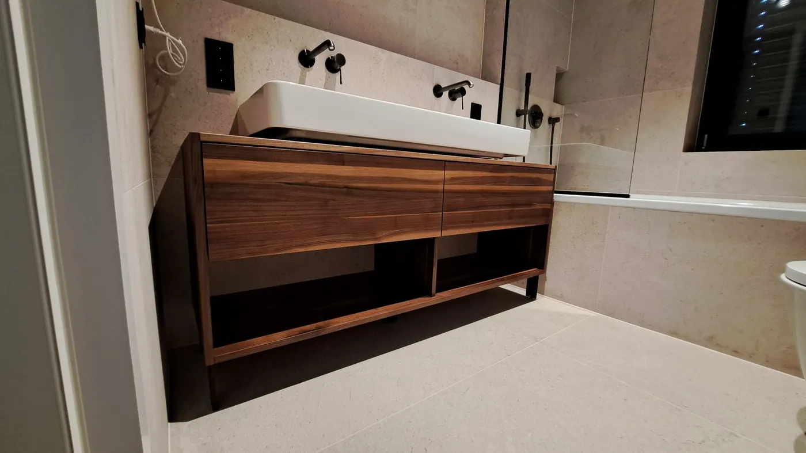
Ob hängend oder freistehend, mit Schublade ums Rohr.Schreinermeister in Germering
Badmöbel sind der Fall, in dem ein Zentimeter am meisten zählt. Der Raum ist klein, das Rohr steht im Weg, und der Fertigschrank passt nie ganz. Ein Waschtisch nach Maß löst beides.
Badmöbel
Die Schublade geht ums Rohr herum.
Unter jedem Waschbecken sitzt ein Siphon, und jeder Fertigunterschrank geht ihm aus dem Weg, indem er auf halber Tiefe endet. Eine Siphonschublade ist so ausgeschnitten, dass sie um das Rohr herumfährt — der Raum darunter wird nutzbar statt zum Sammelplatz. Das ist ein kleines Detail und der Hauptgrund, warum Badmöbel Schreinerarbeit sind.
- Siphonschubladen, die um das Abflussrohr herum ausgeschnitten sind
- Hängend montiert, damit der Boden frei und die Reinigung einfach bleibt
- Feuchtraumtaugliche Materialien und Kanten
- Spiegel mit LED-Beleuchtung, passend zur Möbelbreite
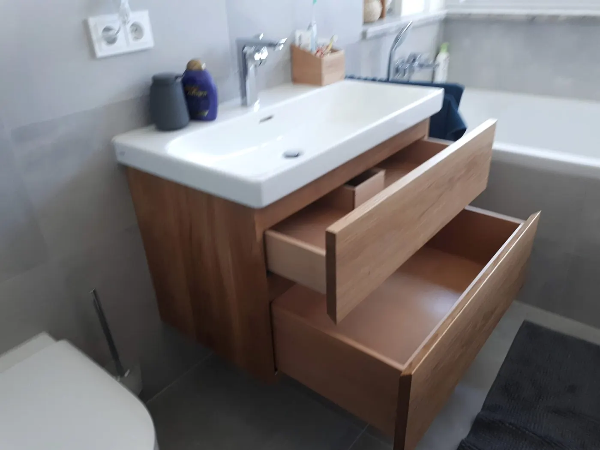
Im Detail
Warum Badmöbel Schreinerarbeit sind.
Waschtisch nach Maß
Breite, Tiefe und Höhe nach dem Raum und nach Ihnen. Auch für ein Aufsatzbecken, das eine niedrigere Platte braucht.
Siphonschublade
Der Ausschnitt sitzt genau dort, wo Ihr Rohr sitzt — deshalb wird vor Ort gemessen und nicht nach Norm gebaut.
Spiegel mit Licht
Beleuchteter Spiegel oder eine Lichtfuge hinter dem Spiegel. Licht von vorne statt von der Decke, dann sieht man beim Rasieren etwas.
Feuchtraumtauglich
Materialien und Kanten, die Wasserdampf aushalten. Oberflächen mit umweltzertifizierten Lacken und Ölen.
Hochschrank dazu
Der schmale Streifen neben der Tür oder über der Toilette wird ein Hochschrank oder ein flaches Regal.
Auch unter der Schräge
Bäder im Dachgeschoss sind der schwierigste Fall — und der, bei dem ein Maßmöbel am meisten bringt.
Gebaut
Bäder, in denen jeder Zentimeter zählt.
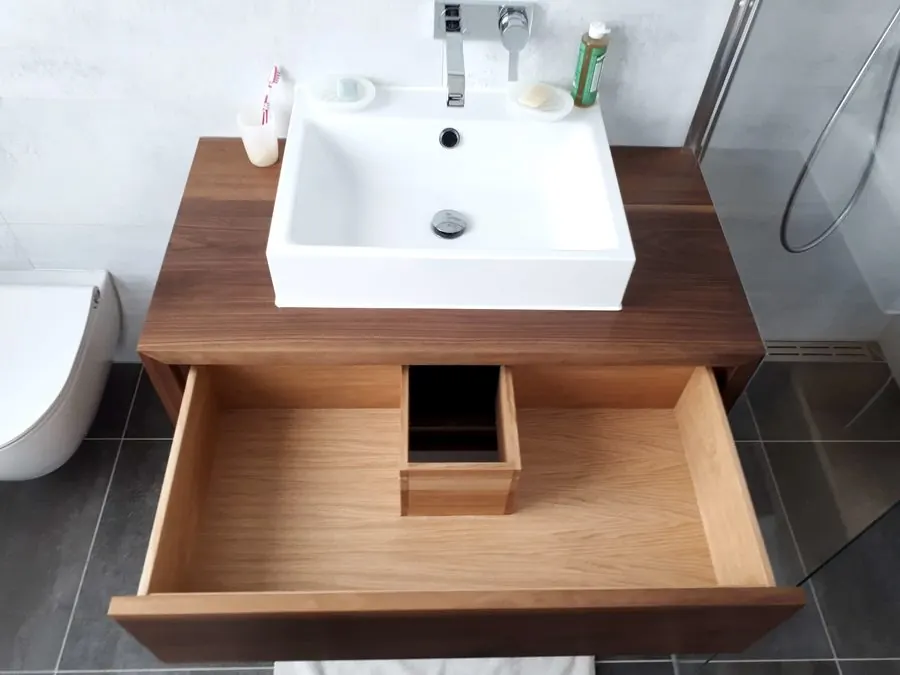

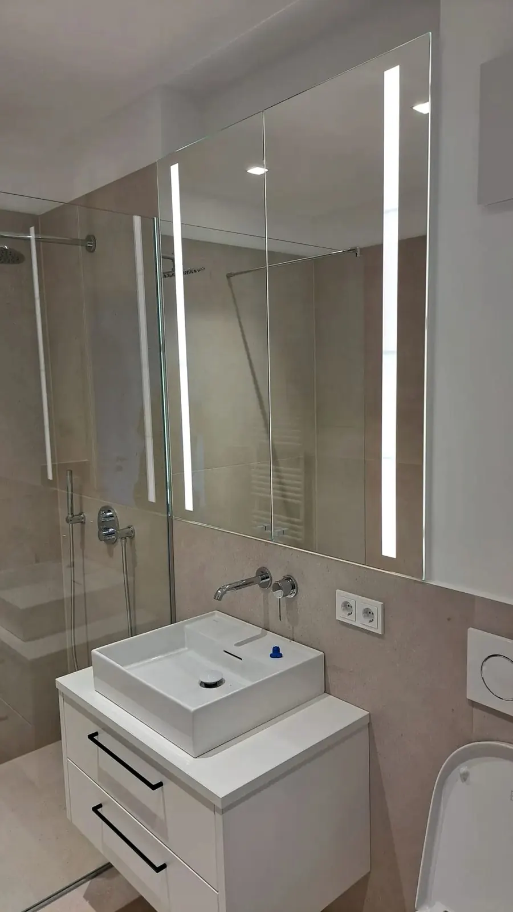
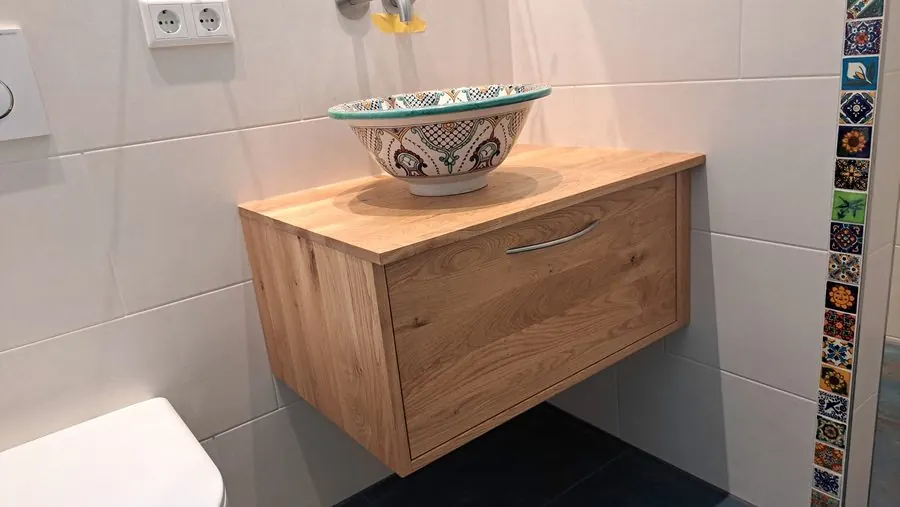
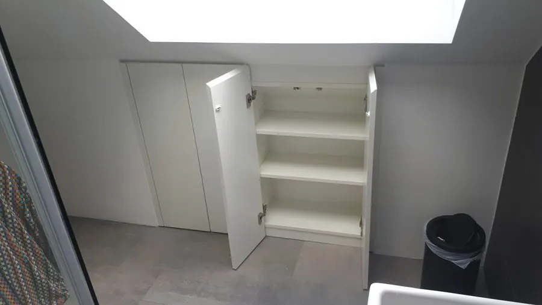
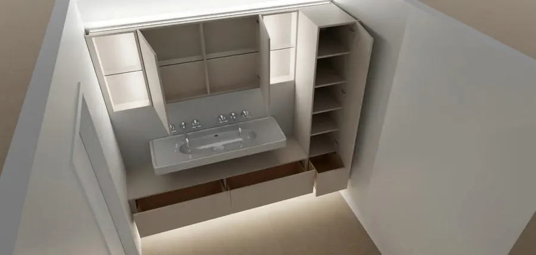
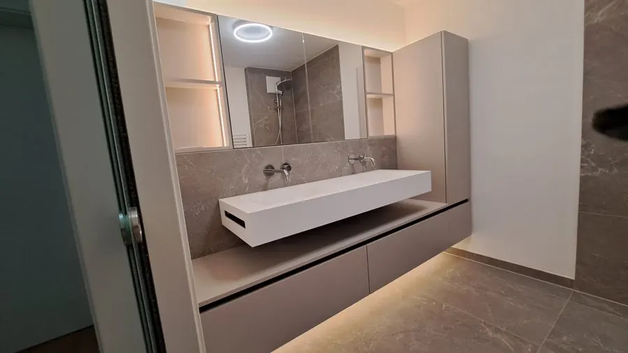
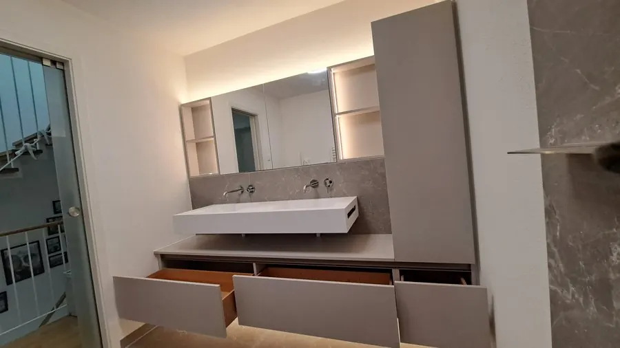
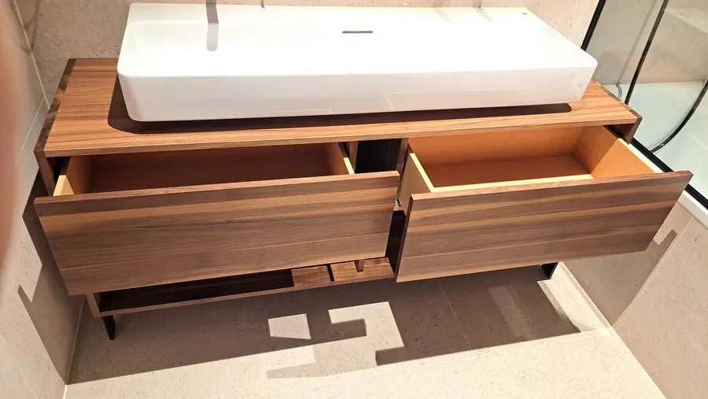
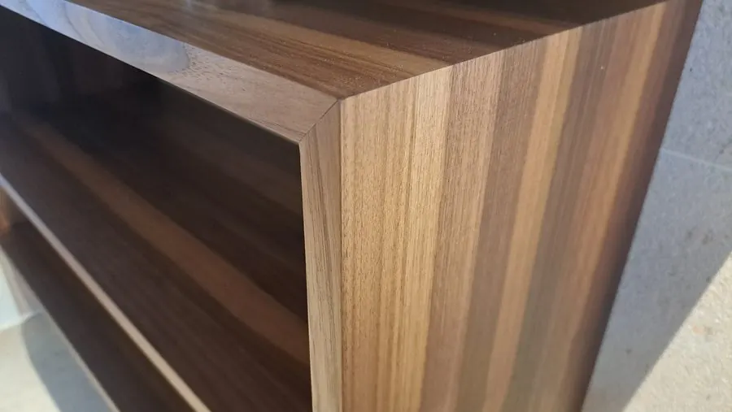
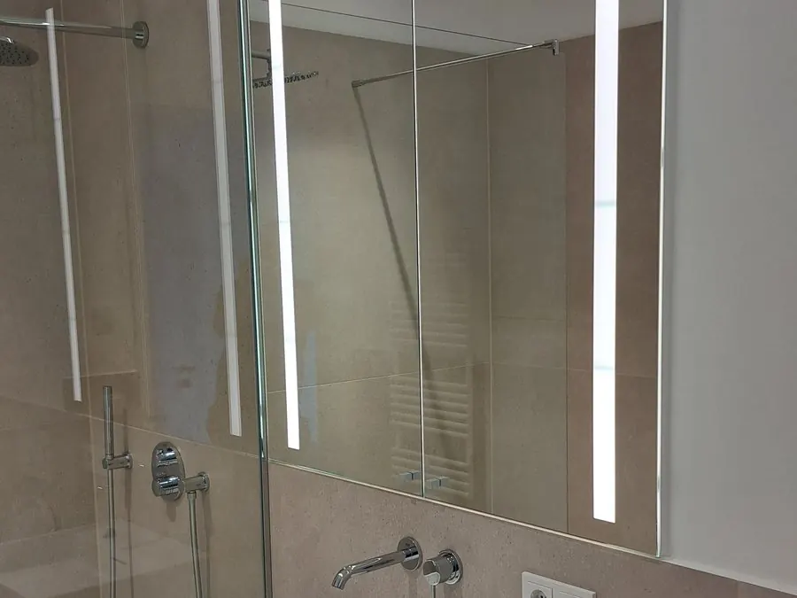
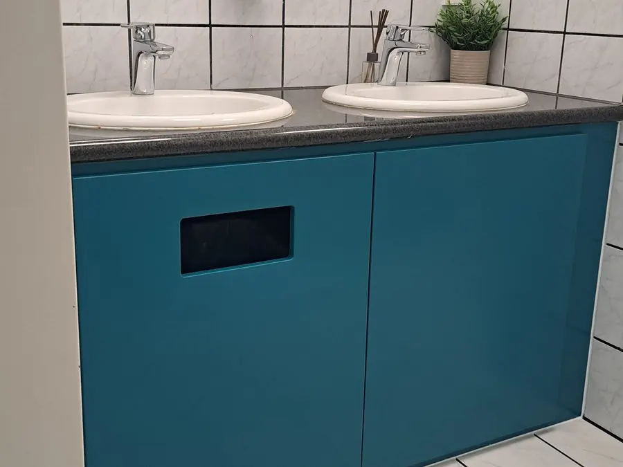
Weiter
Andere Leistungen.

Einbauschränke
Ansehen
Küchen
Ansehen
Stauraum & Treppe
Ansehen
Garderoben
Ansehen
Sideboards & Wohnwände
Ansehen
Sonderanfertigungen
AnsehenNoch Fragen zu Badmöbel? 3 davon sind hier schon beantwortet. Fragen zu Badmöbel
Anfrage
Wie viel Platz haben Sie im Bad?
Ein Foto und ein paar Maße genügen für den Anfang. Alles Weitere klären wir beim Aufmaß vor Ort.
82110 Germering
Wer in der Werkstatt steht, geht nicht immer ans Telefon — eine Nachricht genügt.